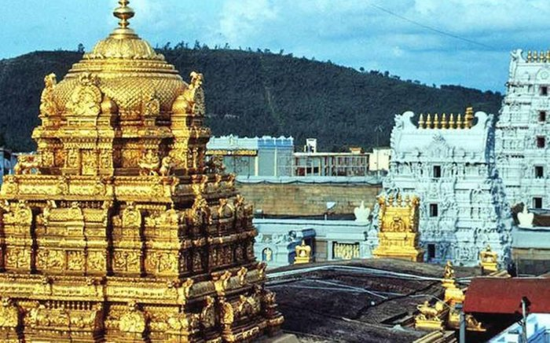
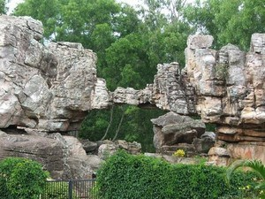
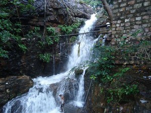
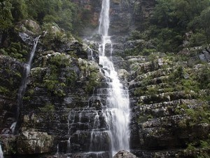
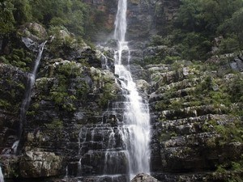

Tirumala Trip:-



 

It is a 2 days trip.
Starting at : ₹ 29,999
Stay at: Taj Tirupati
Places we visit:
1. Lord Venkateswara Temple,
2. Sila Thoranam,
3. Srivari Paadalu,
4. Akasa Ganga,
5. Sri Venkateswara Wildlife Sanctuary,
6. Sri Varahaswami Temple,
7. Talakona Waterfalls,
8. Tumburu Theerthame,
9. Papa Vinasam,
10. Sri Venkateswara Museum,
NOTE:-All passengers should be vaccinated.